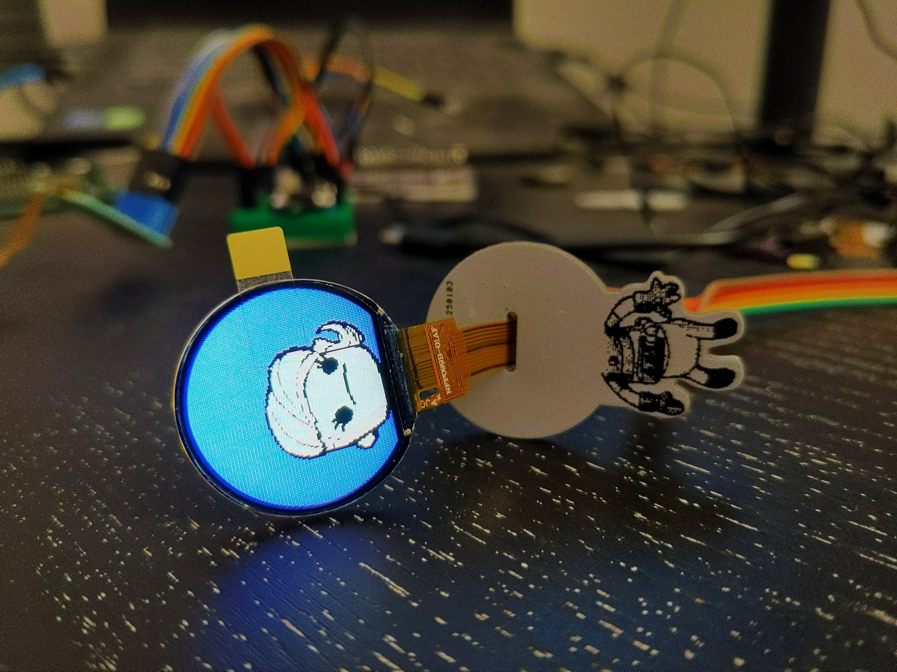

Programming CH32V203¶
Published on 2025-01-27 in Astro-chan Badge.
I finally got a working chlink programmer, so I was able to continue with this project. Since I already had an LCD display demo working on a development board, I was expecting it will just be a question of changing the pin numbers and peripherals. Two days of debugging later, and I still didn’t get the board to even run a simple blink example. It’s all working perfectly fine on a development board with a crystal, but not on my board or the crystal-less LANA TNY development board that I also used for testing. Even though I explicitly enabled the internal HCI clock as the clock source.
I never really figured out what was wrong. I just went back to the example program for LANA TNY, and re-created the LCD example based on that code. And that worked for some reason. I suspect it’s a question of an old version of the vendor libraries.
In any case, I had the code that displays an image on the display, but I wanted that image to be animated. So I added another one, and some delays between displaying them in a loop. Sadly, as soon as I tried to add a third image, I ran out of flash space. It’s really no wonder, as 16 bits per pixel, that data takes up a lot of space.
But the images I’m displaying are really simple, cartoon-like. I don’t really need 16-bit color for them. In fact, 16 colors (4-bit) would be more than enough. So with a bit of change in how the data is generated, I added a palette and used indexed colors. There is no visible difference in quality, but now I can fit as many as 8 or 9 frames of animation. I could make that even better if I limit the images only to areas that change (like the eyes), but that would require a little better preparation of the images.
In any case, I think the whole thing is in a workable state now, so I put everything in a github repository. I want to improve this further, but we will see how that goes.